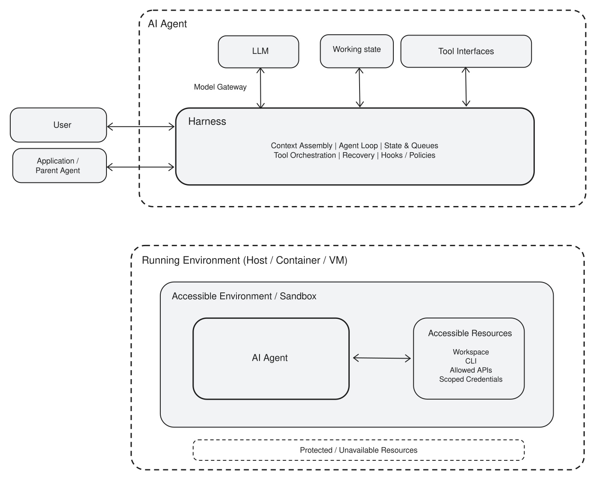

sequenceDiagram
actor U as Mentor
participant H as Harness
participant L as LLM
participant T as Tools
U->>H: Summarize AGE in ADSL
loop until the model has what it needs
H->>L: Question, context, results so far
L-->>H: Which tool to call
H->>T: Run the call
T-->>H: Result
end
H-->>U: Summary, code, open questions
2 Onboarding an AI agent
Tip
Adding AI agent to your workflow is an onboarding problem before it is a technical one.
2.1 The first task
Before working with an AI agent, let’s start with a situation you should know well.
A new member is joining your team. They finished school recently and may have taken a class on clinical trials, so they understand what a statistical analysis plan is. However, they have never seen how your organization actually works: SOPs, folder structures, naming conventions, and the dozen unwritten habits your team follows.
It is their first day. They are eager, and they want to be useful. As their mentor, you give them a first task.
Summarize the age distribution in an ongoing clinical trial’s ADSL dataset.
You already know the answer to this question, or could get it in five minutes. That is the point. The task is not really about the summary statistics. It is about whether the new member can find the artifacts, follow the process, notice what looks wrong, and ask before assuming.
You are checking two things:
- that they can reach the artifacts they need: protocol, SAP, datasets; and
- that they work the way your team works, following established procedures, the approved computing environment, and the local conventions.
This chapter onboards exactly one new member. The only unusual thing about them is that they are an AI agent.
When a team first considers embed AI agent in their workflow, the discussion usually turns to technology: which model to choose, which tools to connect, how to install it. Those questions are real, but they are not the ones that decide whether the work can be delegated to an AI agent. The decisive questions are the same ones you answer for any new colleague. What may they access? Which process must they follow? What do you expect that nobody wrote down? Who reviews the result before it is used?
Every one of those is an onboarding question, and every one of them is yours to answer. The model does not decide what it may read, and it does not decide who signs off on its output. You do. The rest of this chapter walks through those decisions in the order you would meet them on a real first day.
2.2 What you hand over
A new member does not arrive knowing anything about your study. You give them a starting package:
- a working environment with the software they need;
- access to the study artifacts;
- one task.
For this exercise the package is two documents, and you hand them over as two links:
| Artifact | What it is |
|---|---|
| KEYNOTE-189 protocol | A Phase 3 randomized controlled trial protocol for lung cancer |
kn189-synthetic-adsl.csv |
A synthetic ADSL dataset |
The dataset is deliberately small and deliberately imperfect. It carries the kind of untidiness a real study database has while enrolment is still open:
- Randomization pending. Subjects are enrolled but not yet randomized.
- Missing data.
AGEwas never recorded for some subjects. - Protocol deviation. A subject’s age falls outside the inclusion criteria.
You then go back to your own busy day and let the new member work independently. At the end of the day, you sit down together and review what happened.
2.3 Unstated expectations
Notice what you did not do. You did not write down which subjects to include, where the data may go, or when to stop and ask. There was no time. And if you had written it all down, you would be handing over a script rather than training someone to think.
You expect all of it anyway:
- Read the protocol before deciding who counts, rather than summarizing every row in the file.
- Read the SOP be compliant, e.g. data and code do not move somewhere they do not belong.
- Ask when the instruction is ambiguous, instead of guessing and moving on.
- Report what looks wrong. You already know about the subject outside the age range and the missing values. You want to hear about them without asking.
And you expect a short write-up at the end of the day:
- the code they ran;
- the statistics they found;
- the questions they still have.
None of this was said out loud, which is exactly how expectations arrive in real work. Onboarding AI agents like a new colleague absorbs team conventions over time, by working alongside your team and by being corrected when they get something wrong.
2.4 The new member is an agent
A large language model (LLM) on its own cannot do this task. An LLM is a function over text: given a sequence of text, it returns a probability distribution for the next token, a word or fragment of one, and sampling from that distribution repeatedly produces a sentence, a table, or a block of code. Everything it can draw on must already be in the text it was handed, and everything it produces is more text. It can write the code that summarizes AGE; it cannot open the protocol, read ADSL, or run that code. An AI agent is the system built around an LLM so that it can act. It usually consists of:
- harness that assembles context, calls the model, invokes tools, feeds the results back, and keeps the loop moving;
- model gateway that connects the harness to a chosen LLM;
- memory that holds the messages and working state for the task, and anything the agent should still know next time;
- tool interfaces that expose actions such as reading a file or running R;
- accessible environment that is the set of files, commands, APIs, and credentials those tools can actually reach.

The last item deserves the most attention. The accessible environment is the agent’s equivalent of the access you granted the new member on their first day, and it is decided by you, not by the model.
2.5 Inside one turn
You ask one question. The harness turns it into a short loop and repeats that loop until the model has what it needs.
Here the loop runs twice. First to open the protocol and find the population definition. Then to run code over the subjects that definition selects.
The model never opened a file and never computed a number. It chose the population, chose the tool, and explained the answer. Everything else was done by tools, inside the environment you granted.
The model decides and explains. Deterministic software calculates.
2.6 Run the exercise
Open arena.ai/agent. It runs an agent in the browser and shows each step along the way, which makes the loop above easy to watch. Any agent that can read a document and run code will do. This one is convenient because there is nothing to install.
Give it the task the way you would give it to a person, plainly and without the answer:
Based on the KN189 study protocol, summarize the age distribution in the data.
protocol: https://cdn.clinicaltrials.gov/large-docs/80/NCT02578680/Prot_SAP_001.pdf
data: https://raw.githubusercontent.com/elong0527/ai4csr/refs/heads/main/exercise/day1/kn189-synthetic-adsl.csv
Important: disable all web search capability, address the question only use
provided protocol and data.
ImportantWhy the last line matters
KEYNOTE-189 is a published trial. Without that instruction, the agent can search the web and answer from journal articles instead of from the documents you gave it. The numbers it returns would then describe the real study, not your dataset, and they would look entirely credible.
This is the difference between a colleague who reads your protocol and one who remembers a similar study. Only one of them is reviewing your trial.
Note what the prompt does not say: which subjects to include, and which statistics to report. The dataset carries ENRLFL and ITTFL, and the protocol defines the Intention-to-Treat population as all randomized subjects. Choosing a population is the first judgment the new member has to make, and nobody told them to make it.
Watch the interaction, not only the final answer:
- Did the agent open the protocol, or only the data?
- Which population did it summarize, and did it say which one?
- Did it write code, and did that code produce the numbers?
- Did it flag the subject aged 17, or quietly include them?
- Did it search the web anyway?
2.7 End-of-day review
This is the 1:1 you scheduled. You are not checking whether the numbers are pretty; you are checking whether the work can be trusted.
2.7.1 The numbers
You know what the answer should be, because you know the dataset. The prompt did not say which statistics to report, so compare whichever ones the agent chose to give you:
| Statistic | ITT (ITTFL == "Y") |
All enrolled (ENRLFL == "Y") |
|---|---|---|
| Nonmissing N | 24 | 26 |
| Missing N | 1 | 2 |
| Mean | 50.58 | 51.46 |
| Standard deviation | 14.97 | 14.73 |
| Q1 | 41.25 | 42.50 |
| Median | 51.00 | 52.50 |
| Q3 | 61.25 | 61.75 |
| Minimum | 17 | 17 |
| Maximum | 76 | 76 |
Two columns, because the question has two defensible readings and only one of them follows the protocol. An answer that reports a single set of numbers without naming its population has skipped a decision rather than made one.
There is a third reading the table deliberately omits: dropping the underage subject. That one is wrong. The protocol defines ITT as all randomized subjects, so subject KN189-103-025 belongs in the analysis and belongs in an escalation. Removing them quietly is the specific failure this exercise is built to expose, because the resulting table looks entirely reasonable.
Q1 and Q3 depend on the quantile method. The values above use the default in R. The default in SAS gives 39.00 and 61.00 for the ITT population, and both are correct. Any value in that range is fine, provided the method is stated.
If the agent reports different values, that is something to investigate, not something to explain away.
2.7.2 The process
A matching number is not the same as acceptable work. Read back through the session and ask what the agent actually did: which files it touched, which commands it ran, what it sent to the model, and whether anything left the environment that should not have. A harness that keeps this record is what makes the question answerable at all.
2.7.3 The gaps
The last part of the review is the honest one. A demo that produces the right mean is not yet a validated process. Compare what you observed against your own requirements for access control, audit trail, environment qualification, and review, and note the gaps. Those gaps are the subject of the rest of the book.
2.8 Keeping data separate
The exercise also introduces a design choice that outlives it. The model rarely needs every subject-level record. Statistical software can process the raw data inside a controlled environment and return only aggregates or metadata:
Raw ADSL >> deterministic R/SAS/Python calculation >> aggregate result >> LLMThis reduces the chance that sensitive records end up in a model request. A sandbox can restrict the files, commands, network destinations, and credentials the agent can reach, and tool policies can inspect, approve, redact, or block operations at that boundary.
These mechanisms reduce risk; they do not create a guarantee. Model requests, tool output, logs, session history, temporary files, and telemetry each need deliberate treatment. An agent normally inherits whatever permissions the process that started it already holds, so isolation has to be arranged on purpose. It is never the default.
WarningWhat this exercise does, and why you should not copy it
The exercise hands a browser based service a link to subject level records. That is acceptable here for one reason only: the dataset is synthetic and already public.
Do not do this with study data. A hosted agent sends whatever you give it to a third party, which is the exact situation the separation above is meant to prevent. This chapter trades that protection away to keep the setup to a single browser tab. Later chapters describe the arrangement you would use instead.
The implementation belongs in later chapters. The principle belongs here:
Give the agent access to what the task requires, not everything the running environment happens to expose.
2.9 Human judgment
The agent can assemble the calculation and the explanation. It cannot be accountable for the analytical meaning. Even for a task this small, a responsible human still confirms that AGE and its units are appropriate, that the analysis population is the intended one, that missing values were handled sensibly, that the executed code does what it claims, and that descriptive statistics answer the question that was actually asked.
This example is deliberately trivial. The same division of responsibility matters far more once population flags, treatment groups, imputation, derived variables, or inferential methods are involved.
2.10 Takeaways
- An agent is more than a language model: it adds a harness, state, tools, and an accessible environment.
- Onboarding an agent raises the same questions as onboarding a person: access, process, and unstated expectations. Answering them is your job, not the model’s.
- The model decides and interprets; deterministic statistical software calculates.
- The harness makes the loop observable, which is what lets you review the work rather than just the answer.
- A plausible-looking result is not a verified one. Human review remains accountable for the statistical meaning and the final use.
Later chapters develop context construction, tool design, memory, security, governance, reproducibility, and validation in more depth.